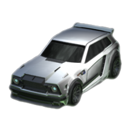

The Fennec
Fennec is een carrosserie van een voertuig die op 1 juli 2019 werd uitgebracht en die kon worden verkregen uit de Totally Awesome Crate. Vanaf vandaag, aangezien kratten met pensioen zijn, kan het worden verkregen bij Blueprints of bij Item Shop. Het kan ook worden verkregen door te handelen tussen spelers.
Deze auto is een van de meest populaire door hooggeplaatste spelers. Vanwege de populariteit werden op 1 februari 2021 Fennec-versies van de Esports Shop- emblemen uitgebracht voor alle beschikbare teams.

Hitbox
De hitbox bepaalt hoe de bal en andere auto's met elkaar omgaan. Het houdt rekening met lengte, gewicht, hoogte, oppervlakte en volume
De fennec heeft dezelfde hitbox als de octane